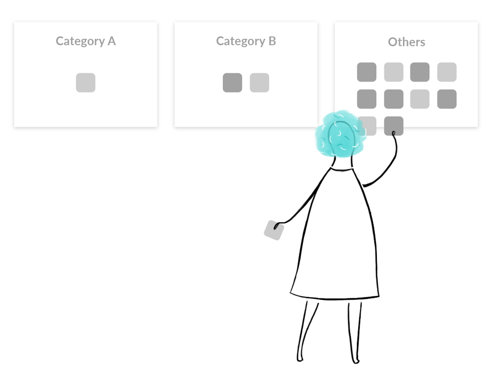
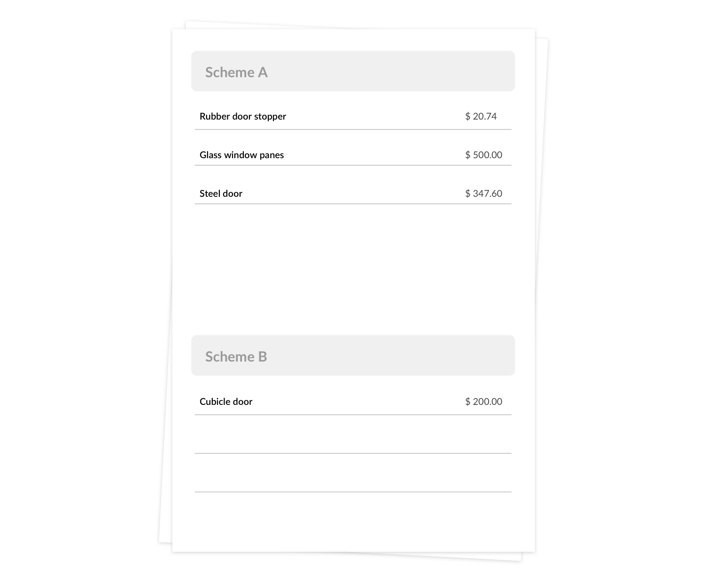
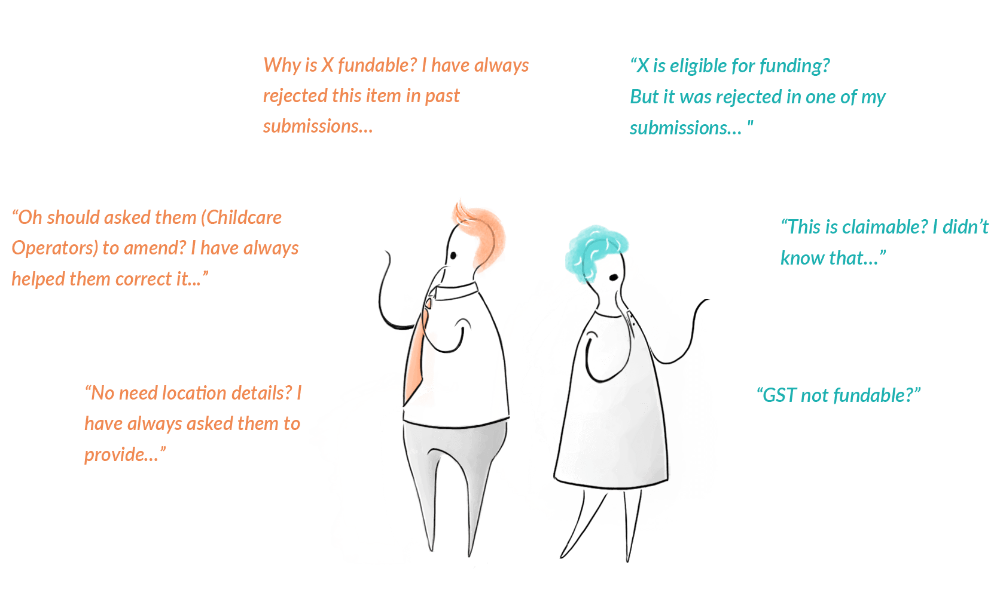
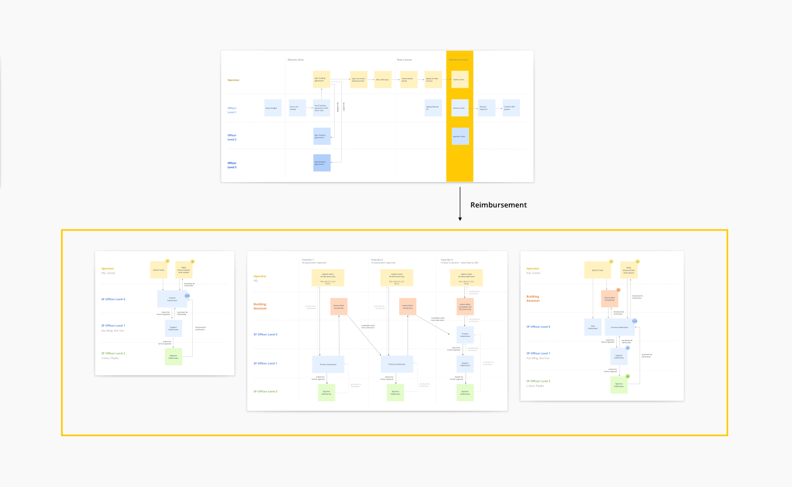

Reimbursing expenses promptly
Childcare Operators are eligible for funding when setting up new Childcare Centres. That's great news, except for the heavy documentation necessary to claim for the expense reimbursement. How can we reduce complexity and effort in the claim process?
ROLEService Design
Interaction Design
Research
Prototyping
PRODUCTTransactional Portal
YEAROn-going
Need for Workflow Automation
Why This Project Has to Happen
My client is a Team is in-charge of infrastructure planning to support the early childhood sector in Singapore. One of their efforts is to provide financial support to operators of childcare centres. Reimbursement of funding have been one of their most operationally taxing day-to-day work and the Team have been heavily dependent on manual processes to support their operations.
My Role
My role as a Designer is to uncover the gaps and opportunities for a more efficient claim process. Together with my Business Analyst, we worked together with the (Business) Team in this automation journey to design & streamline the claim disbursement process.
Challenges Faced by Business and Users
We first look into the current reimbursement process, including the documentations required, processing procedure and approval criterias.
Part of the claim form
The amount of invoiced items to be inputed into the form
Numerous excel spreadsheets for tracking
Our initial findings shows that the challenges faced by business and users are in direct relations to each other.
What Childcare Operators are facing
The end user who submits a claim for a grant after incurring the cost
- Tedious documentation submission that requires detailed inputs and explanation
- Lack of standardisation in submission format and approving standards
What Processing Staff are facing
The business user who processes or approves a claim
- Tedious claim processing workflow that requires careful and repetitive checking
- Disalignment in processing standards and approval criterias
How did these challenges arise?
3 Contributing Factors to the Tedious Process
We studied deeper into the business and operational needs of a Childcare Centre, to better understand the areas that required monetary expenditure and the complications that arises.
Through our research, we identified 3 main factors that contributes to the time and effort in submiting and processing an claim.
Factor #1
Large amount of expenses
Invoices for development works are usually very long and Childcare Operators are required to fill in and explain each invoiced item by item in the claim form.
Processing staff are required to match each items to the original invoices to check if the inputs are accurate. Besides, when errors arises, it is difficult to point out & communicate which item needs to be amended.
Factor #2
Complicated claim policy
Different purchased items are funded under different grant schemes with varying funding quantum. It is not an intuitive task to recognise which item falls under which scheme.
The submission errors that resulted leads to inaccurate calculation of funding utilisation and the need to communicate & amend the errors.
Factor #3
Vague funding criterias
Not all items are eligible for funding. The lack of clarity on the funding criteria resulted in confused users claiming for non-fundable items.
Processing staff thus have to do vigorous and repetitive checks to make sure that funding is not given inappropriately.
So the main question is...
How can we reduce complexity and effort in the claim process, so that errors are minimised and fundings are reimbursed appropriately?
We wanted to focus on finding ways to relief our client and users on the time spent on heavy administrative work so that their time can be better utilised at actual infrastructure planning to benefit our next generation.
Approach #1: Humanising user flow and interface
Reduce Cognitive Overload
We explored the possibilities of technology & design to minimise the effort when filling in and processing a claim submission. Below are some key design solutions.
01
Problem #1
Claimed for non-fundable items
Due to the difficulty in categorisation, users tend to fill in most items under "Others", including items which are not fundable.
Solution #1
Eliminate guesswork
"Others" category is removed & more categories with clearer namings are added to cover all possible fundable items.

Example:
New category "Doors" added. Door-related items are originally under a category named "Builder's Works".
This removes confusion such as: Should a door for a toliet be under "Toliet Fittings" or "Builder's Works" ?
02
Problem #2
Items are filled under the wrong scheme
User are expected to know which grant scheme the item falls under and fill in the actual item name (eg. Rubber door stopper) accordingly.
Solution #2
Enabling technology to take over error-prone inputs & calculation
- User is only required to select the category of the item.
- Scheme type is auto-recognised based on the category selected
- Total claim amount is auto-calculated under each scheme accordingly.
03
Problem #3
Input format induces errors
The claim form is designed to be filled by scheme type.
Users are required to be constantly aware of which invoice the item belongs to. This leads to difficulty in tracking and errors in inputs.
Solution #3
Natural input sequence invoice by invoice
The claim form is designed to be filled by invoice.
Users input each fundable item by the invoice they received, in the exact sequence
This natural & standardised sequencing makes it easier for both Childcare Operators & Processing Staff to fill in, check and process each item.
Approach #2 - Cut down redundant work
Streamline Workflow from 15 to 9 Steps
After mapping the reimbursement service journey, we identified repetitive checks and reviewing due to concerns in errors and inaccurate inputs. These vigorous checks and the resulted to-and-fro communications between the Processing Staff and the Childcare Operator is a huge contributing factor to the long reimbursement process.
With the design solutions in place and automation taking over most of the error-prone categorisation and calculations, errors are less likely to occur. The amount of claim processing efforts can therefore be reduced.
BEFORE
Double-processing
A claim is submitted to a Processing Staff, who checks whether a claim is filled in correctly before sending to an external Assessor.
Processing Staff then processes the claim again with the Assessment.
AFTER
Single-processing
A claim is submitted directly to the Assessor.
Processing Staff processes the claim only once, with the Assessment.
Approach #3 - Testing with The Business Stakeholders Present
Debunk Assumptions in Usability Testing
-
We conducted usability testing sessions with 5 Childcare Operators and 4 Processing Staff, focusing on finding out the following.
- Is the claim submitted correctly
- Is the funding approved appropriately
- Do users understand the category terminology
- Are users aware of the type of items that are fundable Below is an example of how we sorted our the findings into 3 main groups, for quick prioritisation & decision-making. In each synthesis session, we colour-coded our findings to better highlight the issues that requires decision from the business stakeholders (orange).
Key findings after testing with Childcare Operators
Surfacing Gaps in Knowledge Alignment
There are several notable misunderstanding in the claim submission and funding procedure that surfaced during the testing sessions.
Our stakeholders are surprised at the disalignment in the understanding of the submission and approval criterias. By observing how the users interact with the interface, we helped business understand the gaps they need to bridge, and the confusion both external and internal users face when submiting a claim.
Below are some key decisions made after rounds of testing and iterations. We priortised on solving the top issues faced by most users which has the biggest impact on reimbursement efficiency.
Key Findings and Iterations
01
Finding #1
Uncertainty on category termninology causing users to loss out on claiming for eligible items
- 5/5 Childcare Operators have difficulty identifying the right type of items that falls under certain categories
- 3/5 Childcare Operators and 2/4 Processing Officers did not know that certain items are actually claimable
What we did
- Rename categories into more specific terms to help user better understand what items are fundable.
Eg. "Seats" changed to "Chairs & Sofas" - Create a claim policy manual which acts as a reference and the single source of truth
- Train and align Processing Staff on the processing standards and funding criterias to reduce unecessary work and information collection
02
Finding #2
Unclear that certain fields are not required to be filled
- 5/5 Childcare Operators did not know that lesser details are needed for items under Scheme A
What we did
Fields that do not require inputs will be auto-filled with "Not Applicable" upon category selection instead of a "dash".
03
Finding #3
Unsure on the timing for submisssion and its progress
- 3/5 Childcare Operators did not know when is the right time submit a claim
- 3/5 Childcare Operators wanted to know when their claim is likely to be approved to plan for future infrastructure
What we did
- Email notification will be sent when claims are (1) due for submission, (2) successfully submitted, (3) approved or rejected
- Users can log in to check their claim status at any point of time
After Rounds of Testing and Iterations...
Our initial prototypes are proven successful in reducing complexity and effort, recording improvements in comprehension of fundable items and ease in claim submission & processing.
5/5
Childcare Operator
Successfully input fundable items correctly without guidance
3/4
Processing Staff
Appropriately approved a claim submission without assistance
3/4
Processing Staff
Finds it easier to process a claim
5/5
Childcare Operator
Finds auto-categorisation & calculation of invoiced items very helpful
Reflection
Despite being part of a lean project team, I am grateful to have a dedicated Business Owner Team actively participating and supporting us in all aspects of the service design journey. In fact, expense reimbursement is only one part of a bigger service journey which we are currently working with the Team to steamline.
Reimbursement part of the entire service delivery
What Can We Do Better
-
The scope of this project entails that I rely on business' assumptions, my instinct and light usability testing. With more time and resources, I will dig deeper into the needs and behaviours of users through more user engagement and testing.
- Design better categorisation and category namings through card-sorting and/or tree-testing
- Find out the time-taken to submit an actual claim through testing with a working prototype to better assess the design effectiveness and weaknesses The product is currently under development and there are numerous design considerations which I couldn't elaborate here due to its sensitive nature, but I would love to share some details over a cup of coffee :)
Discovering lifestyle
How can we enhance discoverability of lifestyle content in a business news website?